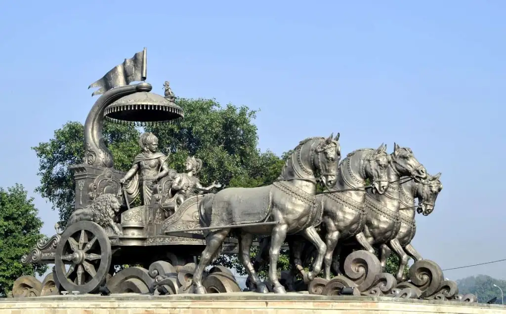
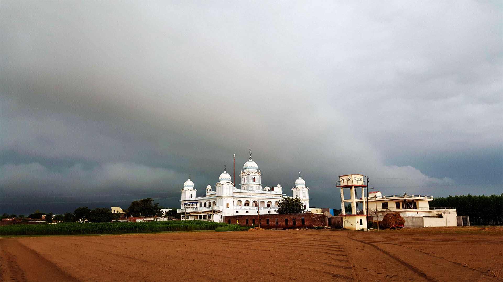
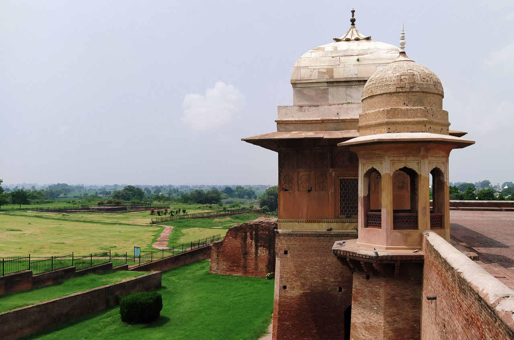
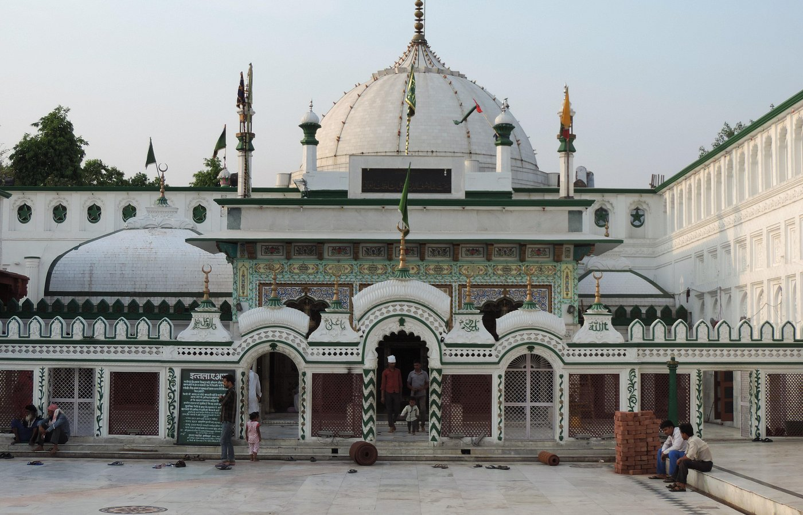
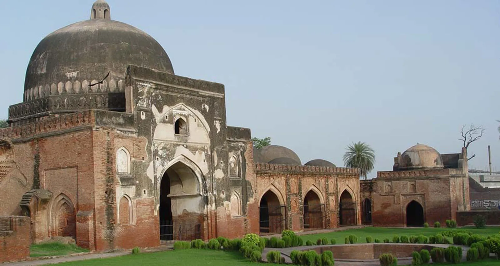
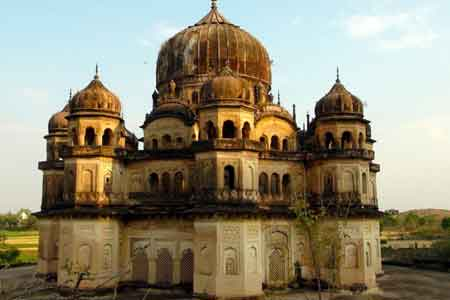
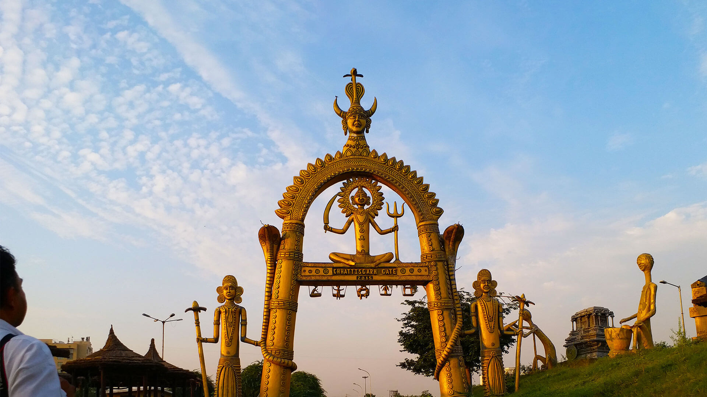
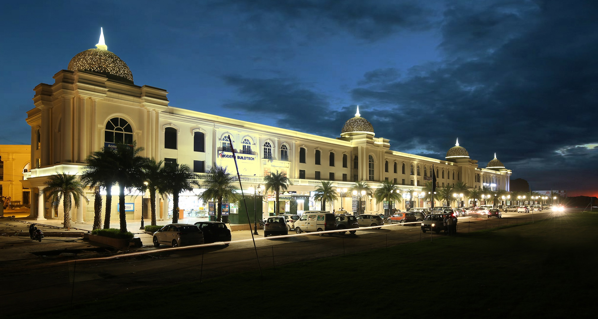
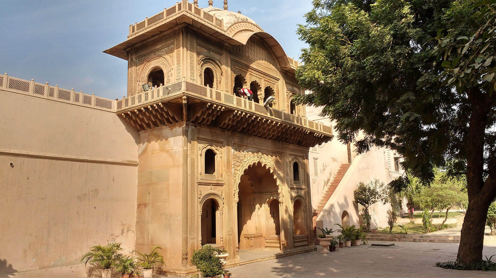
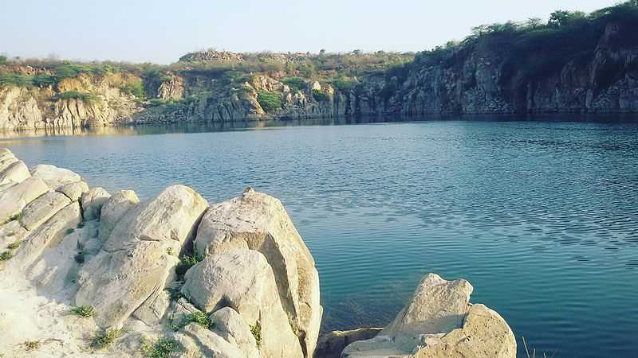

Kurukshetra is a sacred city in Haryana, known for its historical and religious significance in Hinduism. It is believed to be the battlefield of the epic Mahabharata. The city has numerous temples, tanks, and ghats.
  Panipat is historically significant for hosting three major battles: the Battle of Panipat (1526), the Battle of Panipat (1556), and the Battle of Panipat (1761). Each battle had a profound impact on Indian history.
  Faridabad, a major city in Haryana, has historical sites like the Raja Nahar Singh Palace. The palace reflects a blend of Mughal and Indian architectural styles. It stands as a testimony to the region's rich history.
   